<title>Intern Pumpkin Hats</title>
<link rel="stylesheet" href="https://fonts.googleapis.com/css2?family=Bricolage+Grotesque:wght@600;700&family=Figtree:wght@400;500&display=swap">
<style>
/* Layout: one column of rounds, newest first; each round is a 4-up grid of square photo cards */
:root{--bg:#f4f2ef;--fg:#1c1b1f;--muted:#68646d;--card:#ffffff;--line:#e2dee6;--flaw:#a3321f;--chosen:#1f6b45;--chosen-fg:#ffffff;
--display:"Bricolage Grotesque",system-ui,sans-serif;--body:"Figtree",system-ui,sans-serif}
@media (prefers-color-scheme:dark){:root:not([data-theme="light"]){--bg:#141316;--fg:#efedf2;--muted:#a19ca8;--card:#1e1d21;--line:#322f37;--flaw:#f08a74;--chosen:#6fd3a0;--chosen-fg:#0e1f16;color-scheme:dark}}
:root[data-theme="dark"]{--bg:#141316;--fg:#efedf2;--muted:#a19ca8;--card:#1e1d21;--line:#322f37;--flaw:#f08a74;--chosen:#6fd3a0;--chosen-fg:#0e1f16;color-scheme:dark}
body{background:var(--bg);color:var(--fg);font:15px/1.5 var(--body)}
main{max-width:1240px;margin:0 auto;padding-block:28px 48px;padding-inline:16px;display:grid;gap:36px}
header h1{font:700 28px/1.15 var(--display);margin:0;text-wrap:balance}
header p{color:var(--muted);margin:6px 0 0;max-width:65ch}
section{display:grid;gap:14px}
h2{font:600 18px/1.3 var(--display);margin:0}
h2 small{font:400 14px var(--body);color:var(--muted);margin-left:8px}
.grid{display:grid;grid-template-columns:repeat(auto-fill,minmax(250px,1fr));gap:14px}
figure{margin:0;background:var(--card);border:1px solid var(--line);border-radius:10px;overflow:hidden;display:flex;flex-direction:column}
figure img{width:100%;max-width:100%;aspect-ratio:1;object-fit:cover;display:block}
figcaption{padding:10px 12px 12px;display:grid;gap:2px;min-width:0}
figcaption b{font:600 15px var(--display)}
figcaption span{color:var(--muted);font-size:13.5px}
figcaption .sz{font-size:12px;letter-spacing:.02em}
figcaption .flaw{color:var(--flaw)}
.rec{justify-self:start;font:600 11.5px var(--body);letter-spacing:.04em;text-transform:uppercase;color:var(--chosen-fg);background:var(--chosen);padding:2px 8px;border-radius:99px}
figure.chosen{border-color:var(--chosen)}
</style>
<main>
<main>
<header><h1>Mũ bí ngô Halloween cho Intern</h1>
<p><b>Đã chuyển sang Lamp:</b> J1, G4 và G6 được chọn và làm tiếp cho Lamp ở trang <a href="https://claude.ai/artifact/EZKDMoMDTMGh7X28pEP5QY">Mũ bí ngô cho Lamp</a>. Mũ bí ngô rỗng in PLA đội lên chóp phát sáng của Intern (chóp vuông 35 × 32 mm, theo <code>Top_Intern.step</code>). Mắt, mũi, miệng khoét thủng để ánh đèn từ chóp hắt ra. Mặt quay về phía trước, nút bấm ở thân vẫn lộ ra. Vòng mới nhất ở trên cùng.</p></header>
<section><h2>Vòng 2: bí ngô theme công nghệ, phủ 2/3 chóp <small>G1–G8</small></h2><div class="grid">
<figure><figcaption><b>G1 Circuit Pumpkin</b><span class="sz">Phủ 2/3 trên của chóp, mũ ~40–45 mm</span><span>Bí ngô cam có múi, khắc đường mạch và chấm via giống hoa văn trên thân Intern</span></figcaption></figure>
<figure><figcaption><b>G2 Dot Matrix</b><span class="sz">Phủ 2/3 trên của chóp, mũ ~40–45 mm</span><span>Mặt chỉ là lưới lỗ vuông nhỏ như màn LED dot-matrix: mắt vuông, miệng cười bậc thang</span></figcaption></figure>
<figure>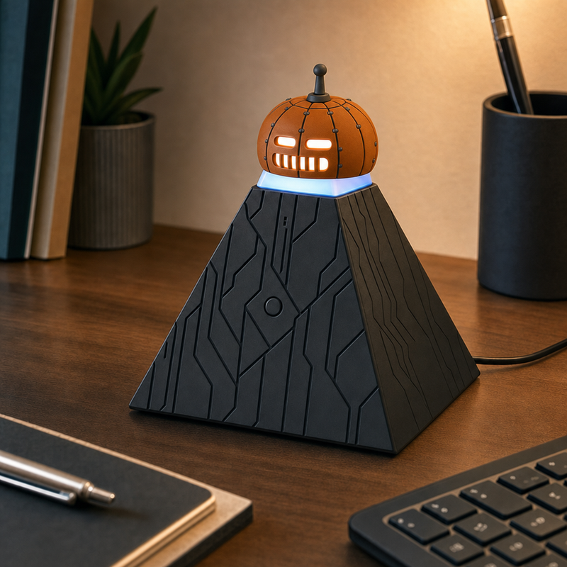<figcaption><b>G3 Robot Pumpkin</b><span class="sz">Phủ 2/3 trên của chóp, mũ ~40–45 mm</span><span>Bí ngô robot: múi ghép bằng đường nối và đinh tán, cuống là ăng-ten ngắn, mắt khe ngang, miệng lưới</span><span class="flaw">Lỗi ảnh: đường nối và đinh tán mờ; ăng-ten mảnh</span></figcaption></figure>
<figure class="chosen">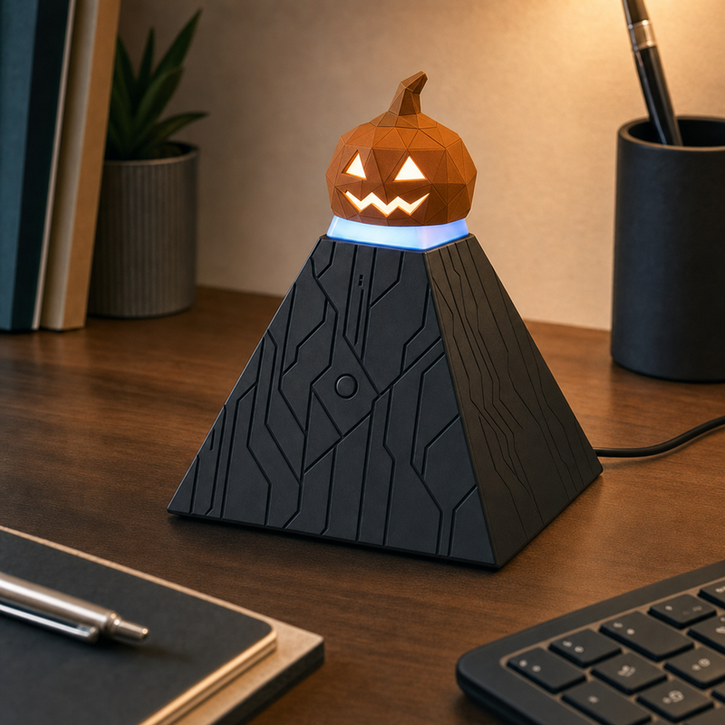<figcaption><span class="rec">Đã chọn · chuyển sang Lamp</span><b>G4 Low-poly</b><span class="sz">Phủ 2/3 trên của chóp, mũ ~40–45 mm</span><span>Bí ngô low-poly ghép từ mặt tam giác như mô hình 3D, mắt tam giác, miệng zig-zag</span></figcaption></figure>
<figure>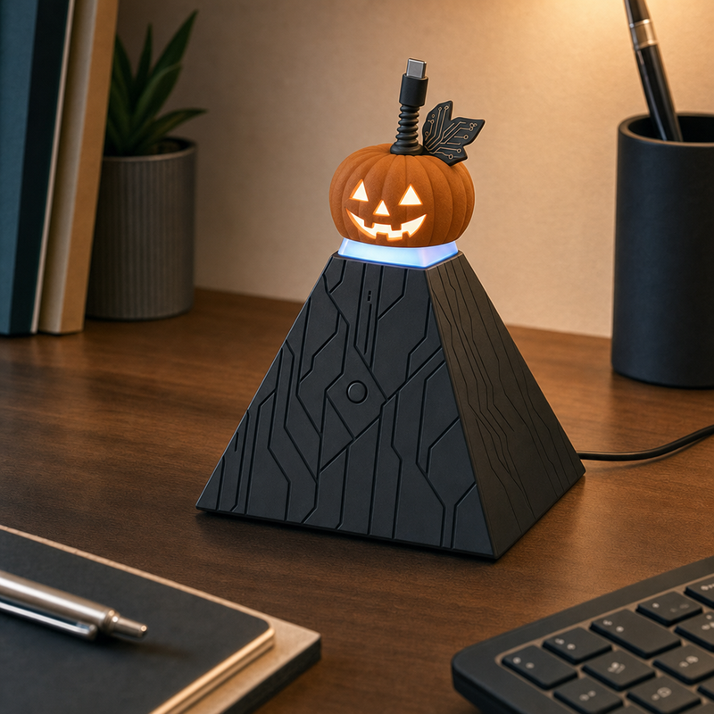<figcaption><b>G5 USB Stem</b><span class="sz">Phủ 2/3 trên của chóp, mũ ~40–45 mm</span><span>Cuống là dây cáp xoắn có đầu USB-C, lá hình bảng mạch nhỏ</span><span class="flaw">Lỗi ảnh: cáp và lá mảnh, khó in</span></figcaption></figure>
<figure class="chosen">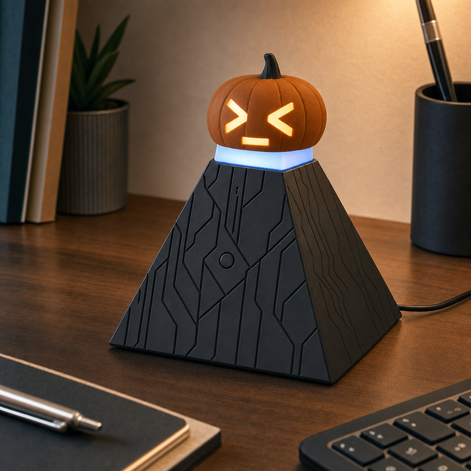<figcaption><span class="rec">Đã chọn · chuyển sang Lamp</span><b>G6 Terminal Face</b><span class="sz">Phủ 2/3 trên của chóp, mũ ~40–45 mm</span><span>Mặt là dấu nhắc lệnh: mắt hình &gt; và &lt;, miệng là con trỏ gạch dưới</span></figcaption></figure>
<figure>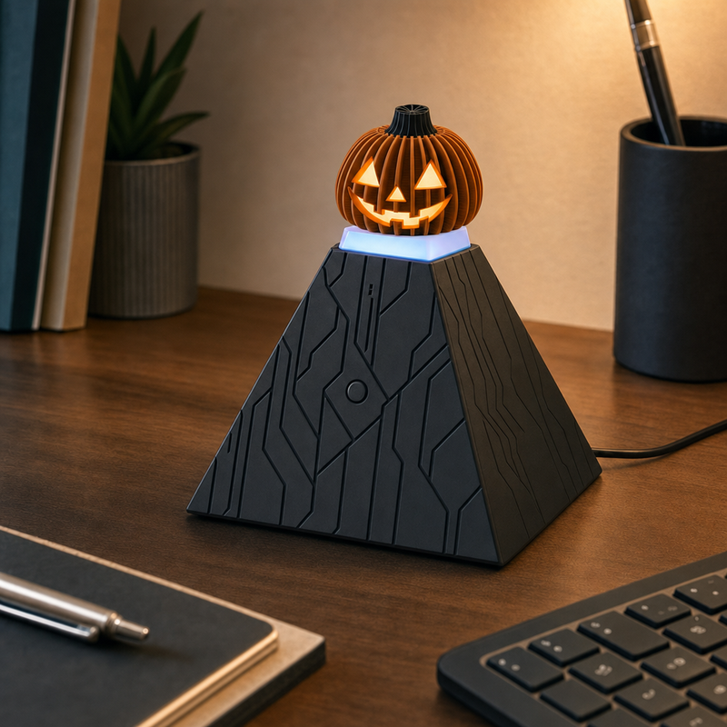<figcaption><b>G7 Heatsink</b><span class="sz">Phủ 2/3 trên của chóp, mũ ~40–45 mm</span><span>Múi bí là các lá tản nhiệt nhôm màu cam cháy, cuống như trục quạt tản nhiệt</span><span class="flaw">Lỗi ảnh: lá tản nhiệt mỏng, cần làm dày hơn khi in</span></figcaption></figure>
<figure>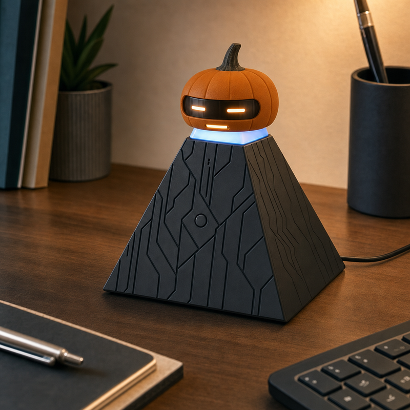<figcaption><b>G8 Cyber Visor</b><span class="sz">Phủ 2/3 trên của chóp, mũ ~40–45 mm</span><span>Bí ngô đeo kính chắn đen ngang mặt như mũ robot, mắt là hai vạch sáng</span></figcaption></figure>
</div></section>
<section><h2>Vòng 1: phủ 2/3 chóp (J1–J4) và phủ toàn bộ chóp (J5–J8) <small>J1–J8</small></h2><div class="grid">
<figure class="chosen">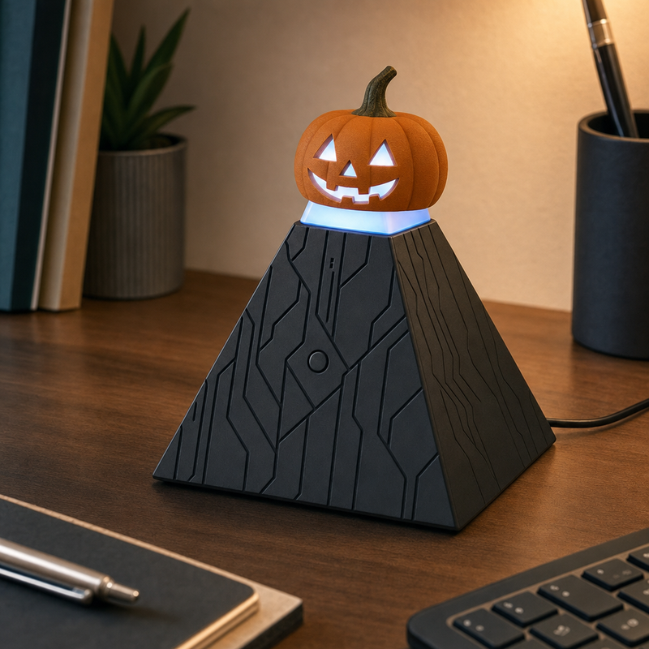<figcaption><span class="rec">Đã chọn · chuyển sang Lamp</span><b>J1 Classic Jack</b><span class="sz">Phủ 2/3 trên của chóp, mũ ~40–45 mm</span><span>Bí ngô cam có múi, cuống xanh nâu, mắt mũi tam giác, miệng răng cưa</span><span class="flaw">Lỗi ảnh: ánh sáng qua mặt hơi trắng lạnh vì chóp phát sáng màu xanh trắng</span></figcaption></figure>
<figure>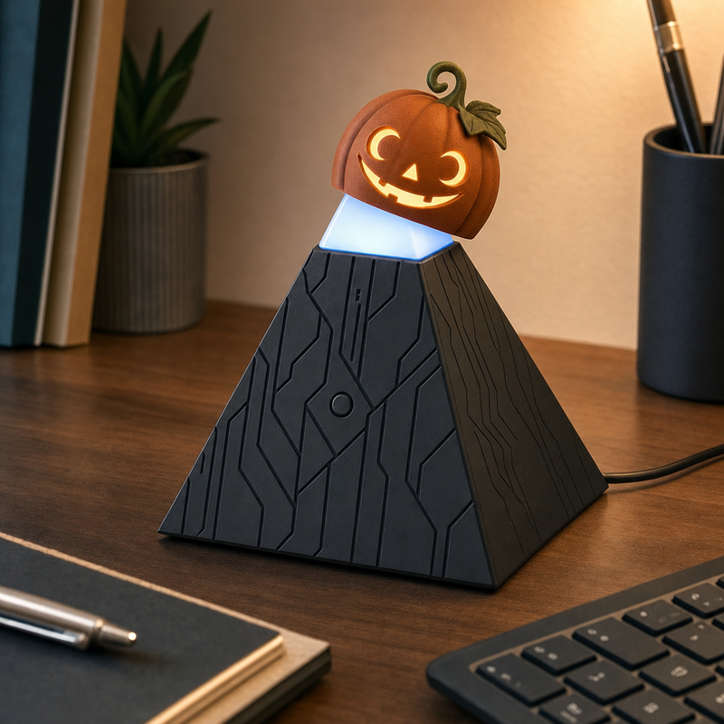<figcaption><b>J2 Tilted Vine</b><span class="sz">Phủ 2/3 trên của chóp, mũ ~40–45 mm</span><span>Bí ngô cam cháy đội nghiêng, có tua dây leo và một lá, mắt và miệng hình trăng khuyết</span></figcaption></figure>
<figure>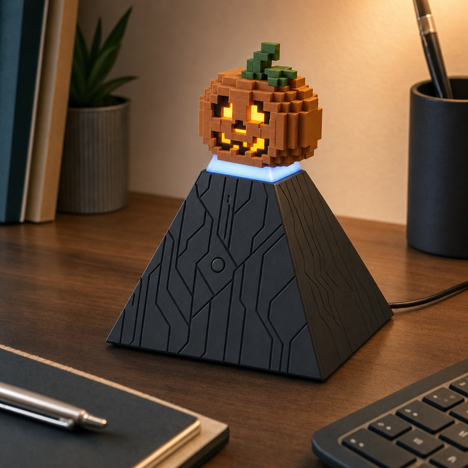<figcaption><b>J3 Pixel Pumpkin</b><span class="sz">Phủ 2/3 trên của chóp, mũ ~40–45 mm</span><span>Bí ngô 8-bit ghép từ khối vuông, cuống và lá pixel, mắt mũi miệng pixel</span></figcaption></figure>
<figure>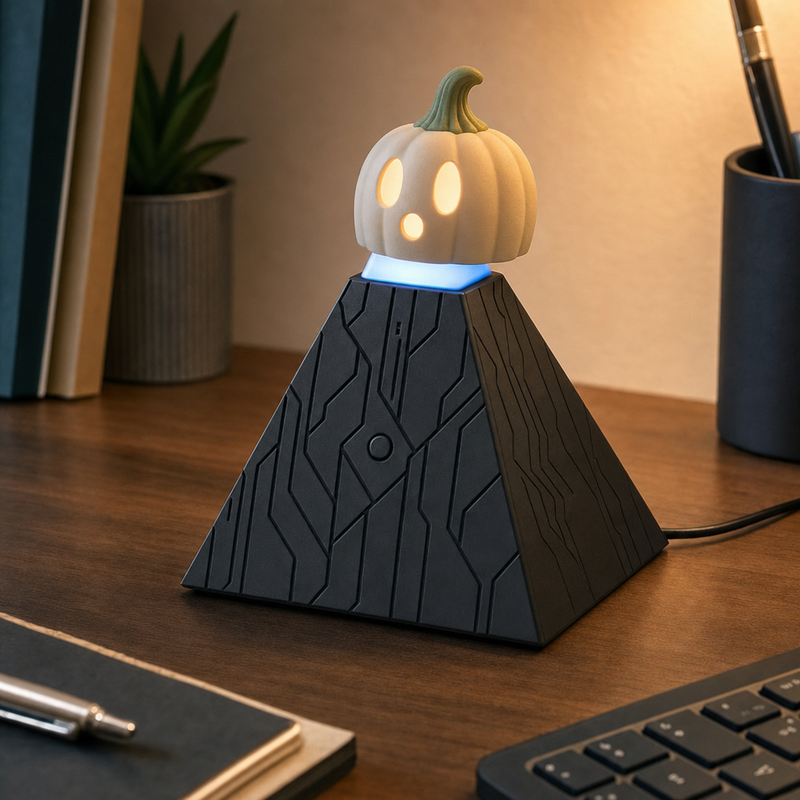<figcaption><b>J4 Ghost Pumpkin</b><span class="sz">Phủ 2/3 trên của chóp, mũ ~40–45 mm</span><span>Bí ngô trắng kem, cuống xanh xám, hai mắt bầu dục và miệng tròn chữ O</span></figcaption></figure>
<figure>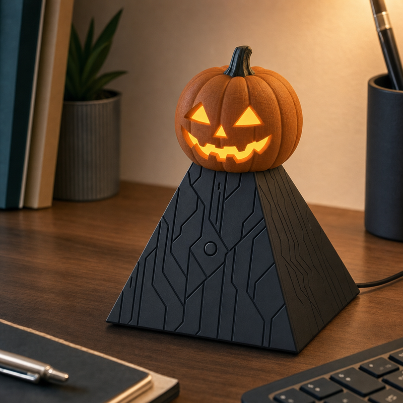<figcaption><b>J5 Round Lantern</b><span class="sz">Phủ toàn bộ chóp, mũ ~50–60 mm</span><span>Đèn bí ngô tròn cổ điển, múi sâu, cuống dày, miệng zig-zag rộng</span><span class="flaw">Lỗi ảnh: to hơn dự tính, khoảng 70 mm</span><span class="flaw">Bỏ: phủ toàn bộ chóp thì mũ to quá</span></figcaption></figure>
<figure>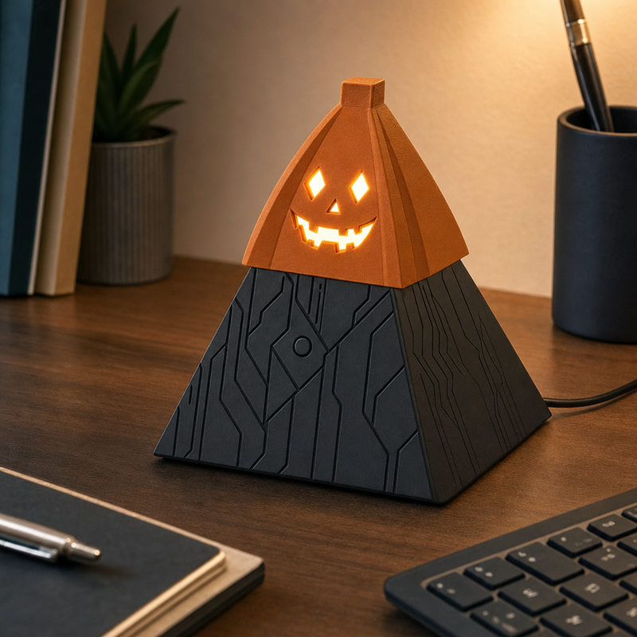<figcaption><b>J6 Pyramid Pumpkin</b><span class="sz">Phủ toàn bộ chóp, mũ ~50–60 mm</span><span>Bí ngô bốn mặt nối tiếp dáng kim tự tháp của thân, cuống vuông, mắt hình thoi</span><span class="flaw">Bỏ: phủ toàn bộ chóp thì mũ to quá</span></figcaption></figure>
<figure>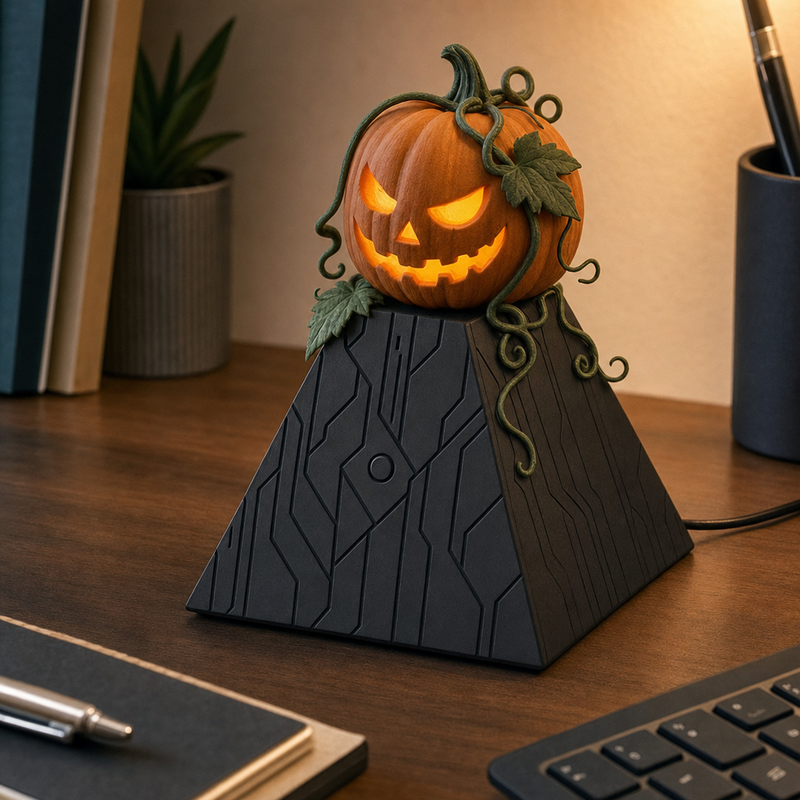<figcaption><b>J7 Vine Wrapped</b><span class="sz">Phủ toàn bộ chóp, mũ ~50–60 mm</span><span>Bí ngô cam quấn dây leo xanh đậm, lá và tua cuốn rủ xuống thân, mắt xếch</span><span class="flaw">Lỗi ảnh: to hơn dự tính; tua dây mảnh, khó in</span><span class="flaw">Bỏ: phủ toàn bộ chóp thì mũ to quá</span></figcaption></figure>
<figure>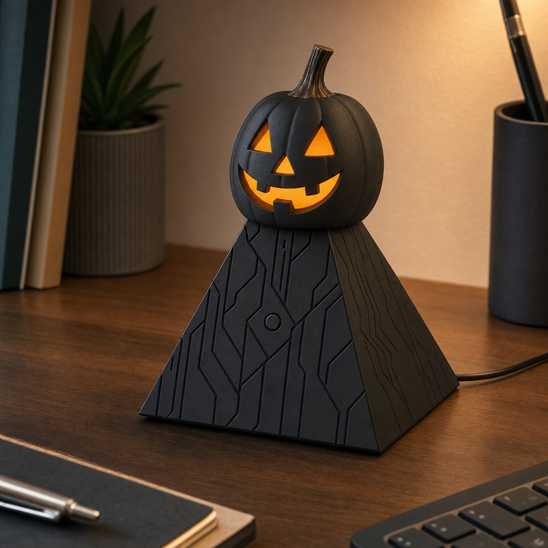<figcaption><b>J8 Midnight Pumpkin</b><span class="sz">Phủ toàn bộ chóp, mũ ~50–60 mm</span><span>Bí ngô đen nhám cùng màu thân, cuống đồng; màu cam duy nhất là ánh sáng qua mặt khoét</span><span class="flaw">Bỏ: phủ toàn bộ chóp thì mũ to quá</span></figcaption></figure>
</div></section></main>
